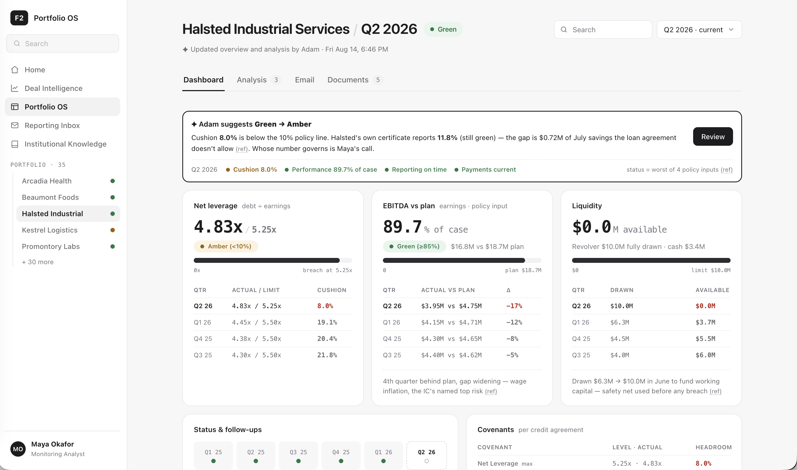
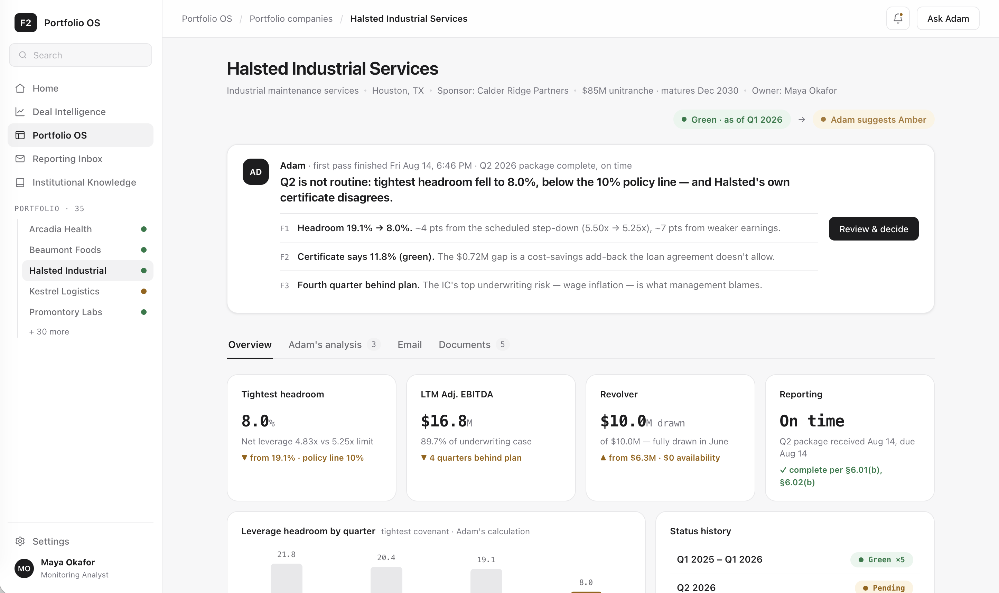
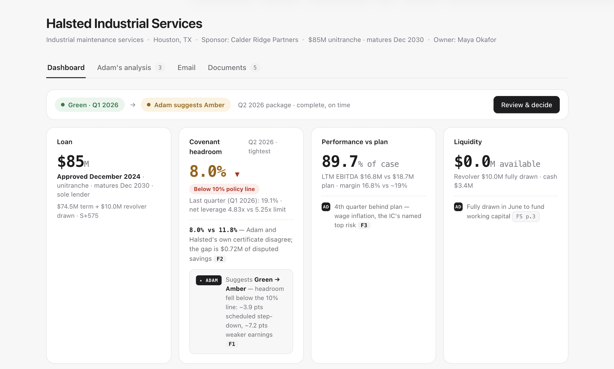
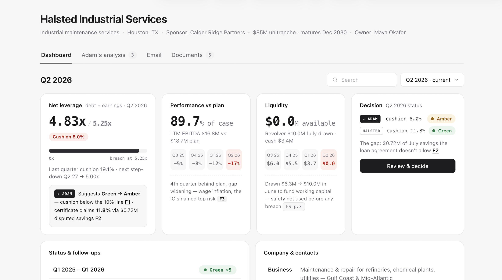
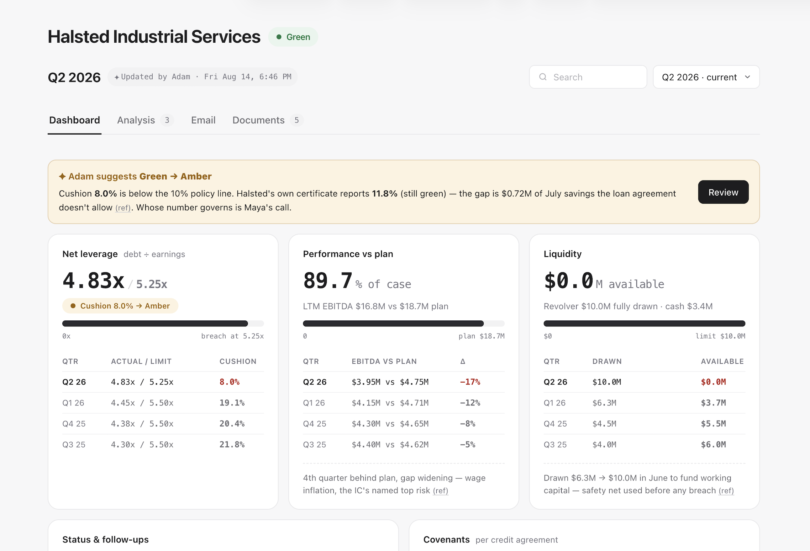
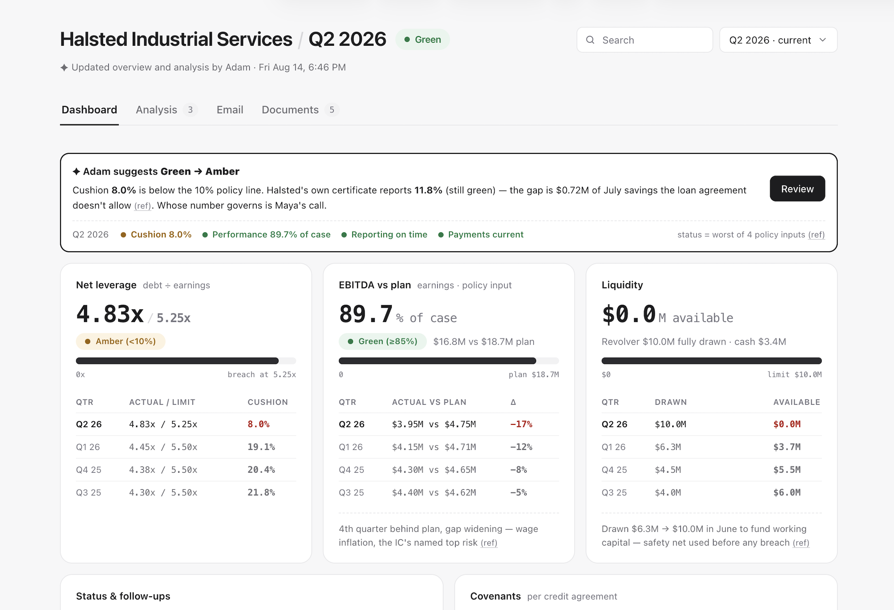
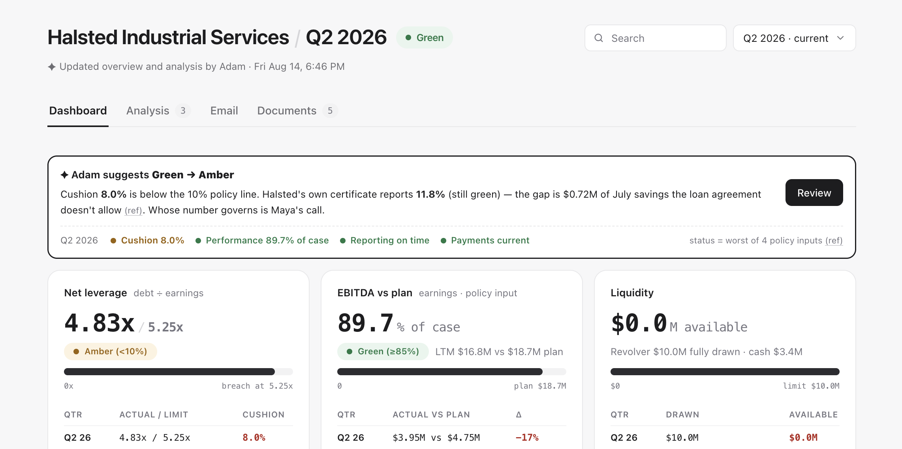
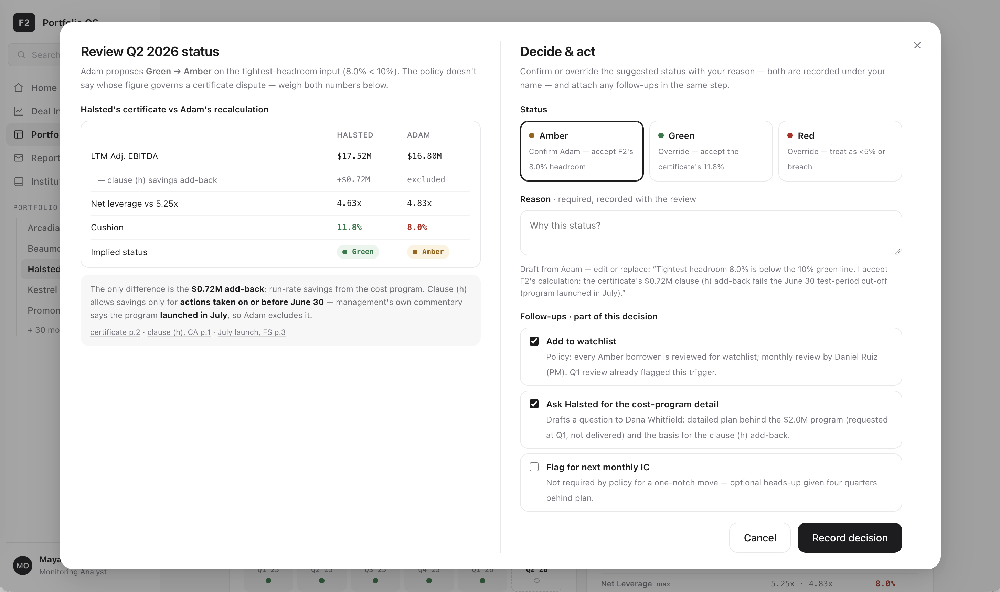

A workspace for faster decisions
My design focused on Maya's use case: she opens it and, within a minute, knows what changed this quarter, why, whether she agrees with Adam, and what to do next.
This case study walks through: how I framed an ambiguous problem, used AI tools to explore directions, design thinking and decisions that shaped the proposal.

What I was given from the brief and data pack
What I used from the context versus what I set aside: the brief and folders 2–4 shaped the design; folder 1 is background.
Design what Maya sees and does from learning the Q2 package is ready to making her health-status decision.
Open the workspace and, within a minute, know what changed, why, whether she agrees with Adam, and what to do next.
How the status is scored
Status = the worst band across all four inputs. Maya can override the computed status with a written reason.
| Input | Green | Amber | Red |
|---|---|---|---|
| Tightest covenant headroom | ≥ 10% | 5–<10% | < 5% / breach |
| LTM Adj. EBITDA (% of case) | ≥ 85% | 70–<85% | < 70% |
| Reporting delinquency (days) | ≤ 15 | 16–30 | > 30 |
| Payment status | Current | — | Missed |
How this was made
Approach in one line: I set direction, structure, and taste; AI read the data pack, drafted, and wired the data. Every output was reviewed and corrected before moving on.
Who's in the room, and what the brief fixes versus leaves open.
Asked AI to turn context into a readable brief
Gave a Claude agent access to the brief and project folder, and asked it to generate an HTML page summarizing the context and user needs.
Three parties, one loop, and our focus
Mapped how the stakeholders relate, and identified who the design needs to serve.
Borrower · Halsted
F2 agent · Adam
F2 user · Maya
- The lender's needs — Northgate makes money on interest and getting the $85M back, so its core need is to protect returns by catching credit risk early. Clear signals and the health status let it reduce losses across the whole book (35 borrowers), not just one loan.
- Serve different roles — beyond Maya's call: a portfolio manager watching book-level risk, an account / relationship manager owning borrower communication, loan servicing chasing payments and reporting, or a workout specialist on a distressed credit — each needs its own view, depth, and cadence.
Knowns vs unknowns: what the brief fixes, what it leaves open
The brief fixes the shape of the thing. What it deliberately leaves open became my design questions — and the backbone of every iteration that followed.
A single-borrower dashboard
One workspace — Halsted — built on the data pack. Maya reviews a few key data points plus Adam's suggestion, then takes an action: change the health status, or not.
- Scope — one dashboard, one borrower (Halsted)
- Data — brief mentioned multiple data
- Adam suggests (Risk Intelligence) — analyzes and recommends actions
- Maya decides — reviews analysis, then keeps or changes the health status
- On conflicts, default to Adam's numbers because it follows the standardized definition the whole platform uses.
- Which data to show — what does Maya need to make the call?
- How to design the cards so the information is scannable?
- How the agent surfaces its insight and next steps?
The goal, the pivots, and how the dashboard took shape.
The first version generated by AI: a useful mess
AI already had the context from the digest, so I had it mock up a first workspace page — enough to see what data we had to work with and where it needed clearer direction.

- What AI delivered — a working dashboard and page framework.
- What needed direction — Adam's card and the data cards: text-heavy, no hierarchy, and a weak link between the data and the action.
- My design focus — Adam's card and the top row of cards — make them scannable, actionable, and scalable.
20 iterations, 4 pivots to meet Maya's goal
The path wasn't linear. I explored top cards, card/info design, and agent card together, compared and pivoted as a whole, until the workspace held up.
My goals — (1) Maya knows what changed from data & Adam's card, and what to do next. (2) Consider for other roles and use cases. My focus — Adam's card + top row of cards to help Maya make her decision within a minute.

From report to answer-first
Cut the chrome and the big read-me card; folded Adam's findings into the data cards they belong to. A dashboard shouldn't make Maya read a report to find the answer.

The right signals, as standing monitors
Triaged to the few that drive the call — merged leverage + cushion into one card, cut Reporting, demoted the Loan to the header; added a period switcher so it holds every quarter.

Where the AI's opinion goes
Disagreement is the decision, not a side note — Adam's call moved from a small card, to an in-card block, to a full-width banner, so it's the first thing Maya sees.

From numbers to how the rule holds
Each card marks its policy line (Amber <10%, Green ≥85%); the banner spells out status = worst of four inputs — so Maya can tell the IC which input pulled it to amber.
What earns a place above the fold
Worked with AI to understand the terminology and decide what to surface on top.
- Learned terminology, checked context / folder / policies, suggested and debated with me.
Top cards give any user a scannable read on the borrower's credit risk — the key to protecting Northgate's $85M loan. A few considerations:
- Surface the core signals — the data that changes each quarter and that different roles come back to re-verify.
- Place workflow context dynamically — reporting and payment checks are role- and time-specific, needing attention only under certain conditions — so they don't earn a permanent spot.
- Add key credit-risk signals — liquidity isn't one of the four status signals, but it's critical to gauge whether the company can keep repaying.
How to make top cards scannable
Scannability comes down to a few levers: which data each card shows, which layer to highlight first, and how much detail to reveal progressively — so the eye lands on what matters.
01 How to present layers of data, and which layer to highlight
How I break down the number
Pair layers of data with the insight
- Health tag for scannability — "below 10%, needs to change to amber" is more important than the "8%" itself
- More data for trust — show how the insight was calculated (debt ÷ earnings → limit → cushion), so analysts can trace and trust the number
- Consider for scalability — support different role needs; the insight / health-status bar might change by role
Size/Color to guide reading order
L2 + L4 → L3 (ratio + health tag first, then the limit)
Net leverage vs. cushion — which one is more useful?
02 How to progressively disclose the supporting detail
- Maya needs context and the last 4 quarters for reference — not just this quarter's number
| Qtr | EBITDA vs plan | Δ |
|---|---|---|
| Q2 26 | $3.95M vs $4.75M | −17% |
| Q1 26 | $4.15M vs $4.71M | −12% |
| Q4 25 | $4.30M vs $4.65M | −8% |
| Q3 25 | $4.40M vs $4.62M | −5% |
| Qtr | Actual vs plan | Δ |
|---|---|---|
| Q2 26 | $3.95M vs $4.75M | −17% |
| Q1 26 | $4.15M vs $4.71M | −12% |
| Q4 25 | $4.30M vs $4.65M | −8% |
| Q3 25 | $4.40M vs $4.62M | −5% |
Used a table to show the quarter-by-quarter detail
- Showed 4-quarter data below the core number
- Presented actual vs plan and the changes for Maya to evaluate
- Used color to indicate status or draw attention
Data of previous quarters — show it upfront? hide it?
| Qtr | Actual vs plan | Δ |
|---|---|---|
| Q2 26 | $3.95M vs $4.75M | −17% |
| Q1 26 | $4.15M vs $4.71M | −12% |
| Q4 25 | $4.30M vs $4.65M | −8% |
| Q3 25 | $4.40M vs $4.62M | −5% |
| Qtr | Actual vs plan | Δ |
|---|---|---|
| Q2 26 | $3.95M vs $4.75M | −17% |
Where the agent speaks — and how loud
Adam proposes; Maya decides. The suggestion had to be impossible to miss but never a rubber stamp.
01 Where to show Adam's suggestion
Cushion 8.0% is below the 10% policy line. Halsted's certificate reports 11.8% (still green) — the gap is $0.72M the loan agreement doesn't allow ref. Whose number governs is Maya's call.
Cushion 8.0% is below the 10% policy line. Halsted's own certificate reports 11.8% (still green) — the gap is $0.72M of July savings the loan agreement doesn't allow ref. Whose number governs is Maya's call.
Cushion 8.0% is below the 10% policy line. Halsted's own certificate reports 11.8% (still green) — the gap is $0.72M of July savings the loan agreement doesn't allow ref. Whose number governs is Maya's call.
02 How to make Adam's suggestion scannable
What Adam surfaces for Maya:
- Title provides the conclusion — the action item
- Subtext provides the details
- Footer provides the 4 signals for the health-status check

03 How to guide user action
- Review details in a modal — scalable to various use cases
- Confirm and override are equal-weight — no default path
- Follow-ups ride with the decision — watchlist, ask the borrower, flag the IC

Show details on the page vs. in a modal? Depends on 2 things.
- Action's consequence — a soft check (like flagging the borrower for extra review) should be easy to take and can surface right on the dashboard, while a hard check (like triggering a funding pause) should carry more friction, so it's deliberate and harder to take by accident.
- User type — a monitoring analyst like Maya is the primary user, but other roles may use this dashboard to take different actions, so the surface should flex to each.
The end-to-end flow, how I'd validate it, and what's next.
Review → Decide → Act
The pieces connect into one recorded flow, starting at the notification and ending with the follow-ups filed — so nothing is left in Maya's head.
Review
Decide
Act
How I'd validate it
The prototype is an argument, not proof. Here's what I'd put in front of real monitoring analysts, and the signals that would tell me it holds.
Moderated task-based sessions with 5–8 analysts. Key questions:
- What draws their attention first — and does it match what they actually need?
- Which actions do they want to take?
- From landing on the dashboard to taking an action, how long does it take?
Where I'd take it next
Deliberately out of scope here, but the natural extensions once the single-borrower decision is solid.
- Polish design: Explored different ways to show data and validated with teams/users.
- Make it scalable: Understood broader use cases to ensure product growth and diverse user needs.